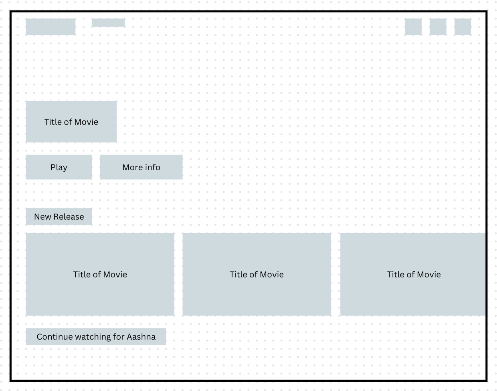
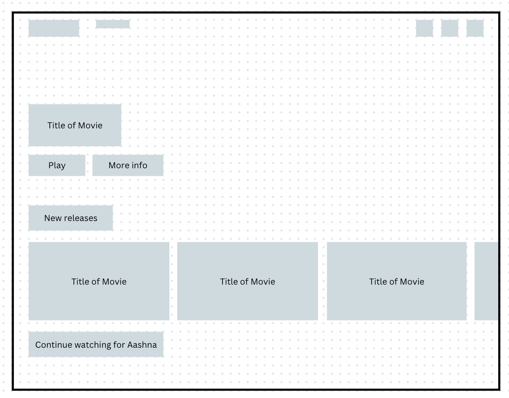

-
Using the favorite website you chose in homework 1, create a wireframe for one page of it using pen/paper, PowerPoint, or any your tool of choice. (use the 'img' tag!) Make sure to let us know what the name of your website is (Use the 'p' tag!)
Name of website: Netflix
-
Try to improve the website you've chosen, and create a redesigned wireframe of one page for the same website using the principles of visual hierarchy that you learned from the article.

-
What is the goal of the website? Who is it intended for? How does the design accomplish this? Write 2-3 sentences answering these questions. (Use the 'p' tag again!)
The goal of the website is to provide movies and television to users. The design accomplishes the goal, as on this page it automatically plays a new or trending movie at the top. It has numerous categories, including "continue watching for (user's name)" and "new releases", so that it's easy for the user to find a show or movie to watch.
-
Write 2-3 sentences about what problems your redesign addressed, and how it solved them.
I found that the original design of the Netflix site was already good. I adjusted the sizing of the text to better reflect visual hierarchy principles. I found that the text for "new releases" and "continue watching for Aashna" were too small, and the play button and learn more buttons at the top were too big. So I adjusted the sizing accordingly.
NOTE: Make sure to include the wireframe images in the website and don't just put it in your assets folder!
Your wireframes should look something like this: